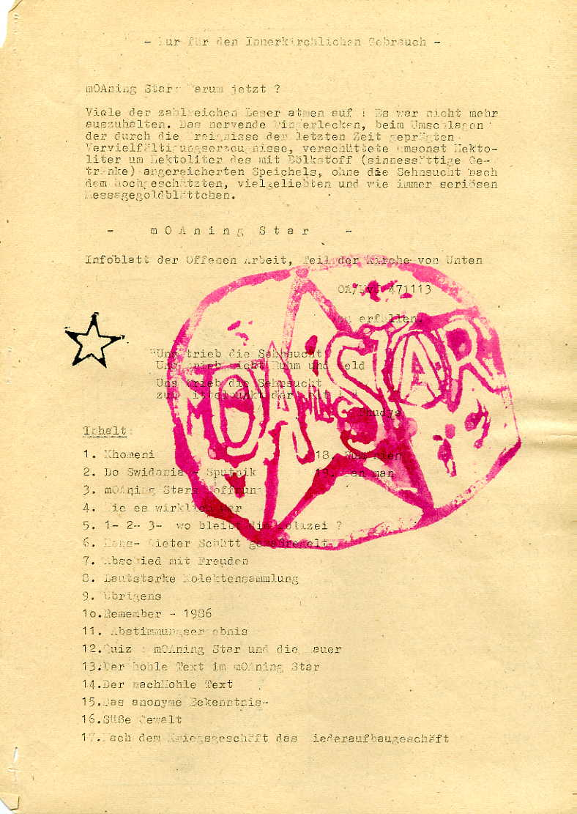

> Beschreibung des Materials
Den Inhalt des politischen Samisdat der DDR machen in erster Linie Artikel von einzelnen Autoren oder Herausgebergruppen aus. Im Zentrum standen hier Themen, die von der offiziellen Presse tabuisiert wurden oder, wie bei Fragen einer Reformierung und Demokratisierung der Gesellschaft, in direktem Widerspruch zur politischen Doktrin der SED standen. Daraus ergibt sich eine extreme inhaltliche Vielfalt. So reichen die Themen von der globalen Umweltproblematik bis zur Mülltrennung im Haushalt, von der Menschenrechtssituation in der Dritten Welt bis zur Wirklichkeit der individuellen Bürgerrechte in der DDR, von generellen Gesellschaftskonzeptionen bis zu privaten Lebensphilosophien.
Dabei diente der Samisdat sowohl der politischen Selbstverständigung und Diskussion innerhalb von oppositionellen Kreisen, als auch der Wirkung über diese kleinen Personengruppen hinaus. Wichtig für die Arbeit der Gruppen und ihren Kontakt nach außen waren zudem Berichte und Informationen über vergangene und geplante Veranstaltungen.
Dabei diente der Samisdat sowohl der politischen Selbstverständigung und Diskussion innerhalb von oppositionellen Kreisen, als auch der Wirkung über diese kleinen Personengruppen hinaus. Wichtig für die Arbeit der Gruppen und ihren Kontakt nach außen waren zudem Berichte und Informationen über vergangene und geplante Veranstaltungen.
Hier liegt auch der Unterschied zum bereits durch ein DFG-Projekt erschlossenen künstlerischen Samisdat. Bei den oft aufwendig gestalteten Künstlerheften standen vor allem literarische Texte, Prosa, Lyrik, Foto und Grafik im Vordergrund.
Einen weiteren Unterschied bilden die Auflagenhöhen. Die Exemplare des künstlerischen Samisdat wurden in der Regel nur innerhalb der sie herausgebenden Gruppen und unter Freunden und Bekannten verteilt. Anders beim politischen Samisdat. Die Herausgeber hier wollten zusätzlich nach außen wirken und so erreichten die Auflagen zum Teil auch mehrere tausend Stück.
Wichtige Reihen des politischen Samisdat waren z. B.
Einen weiteren Unterschied bilden die Auflagenhöhen. Die Exemplare des künstlerischen Samisdat wurden in der Regel nur innerhalb der sie herausgebenden Gruppen und unter Freunden und Bekannten verteilt. Anders beim politischen Samisdat. Die Herausgeber hier wollten zusätzlich nach außen wirken und so erreichten die Auflagen zum Teil auch mehrere tausend Stück.
Wichtige Reihen des politischen Samisdat waren z. B.
die Reihen des Friedenskreises der Berliner Samaritergemeinde (Pfarrer Rainer Eppelmann) "Aktuell", "Schalom" und "Wendezeit" von 1984 - 1989 mit ca. 35 Ausgaben,
die regional herausgegebenen Nummern der "Arche Info" des grün-ökologischen Netzwerkes Arche in der Evangelischen Kirche der DDR von 1988 - 1989 mit etwa 23 Ausgaben sowie die 5 Ausgaben von "Arche Nova",
der "Friedrichsfelder Feuermelder" des Friedenskreises Friedrichsfelde (Berlin), 1987-1989, mit 33 Ausgaben,
der "Grenzfall" der Initiative Frieden und Menschenrechte Berlin als erstes wirklich außerkirchliches Forum 1986-1989 mit etwa 17 Ausgaben,
die verschiedenen Radix-Blätter (12 Hefte) von Ludwig Mehlhorn, Stephan Bickhardt, Reinhard Lampe u.a. (1986-1989),
die 16 Ausgaben von "Kontext" aus der Berliner Bekenntnisgemeinde (1988-1990).
die "Streiflichter" der Arbeitsgruppe Umwelt im Jugendpfarramt Leipzig, 1981-1989 mit etwa 58 Ausgaben oder
die "Umweltbibliothek/Umweltblätter/Telegraph" des Friedens- und Umweltkreises der Berliner Zionsgemeinde (Umweltbibliothek) mit ca. 47 Ausgaben1986 bis 1989.
Die inhaltlichen Schwerpunkte waren bei den verschiedenen Reihen, je nach ursprünglicher Ausrichtung der Gruppen unterschiedlich:
Friedenskreise: Abrüstung, internationale Verständigung, Wehrdienstverweigerung
Umweltgruppen: Berichte über Umweltzerstörung und Umweltverschmutzung in der DDR, Möglichkeiten des Umweltschutzes
Menschenrechtsgruppen: Verhältnis zur Dritten Welt, Demokratisierung der Gesellschaft, Wahrung und Durchsetzung von Bürgerrechten, Diskussion gesellschaftspolitischer Alternativen
Jedoch sind die Übergänge hier fließend, denn die Gruppen unterlagen natürlich Veränderungen und Entwicklungen.
Dr. Helmut Mottel
Thomas Pilz
Dr. Helmut Mottel
Thomas Pilz

Moaning Star (Nr. 13)